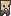

Inicio
Vive junto con pin la aventura en el cerro Blue.
Pin vs Monsters
Historia
Un día normal, como cualquier otro Pin, se encontraba explorando el cerro Blue, cuando de pronto vio a lo lejos algo extraño parecía ser un esqueleto moviéndose!.
Más sobre Pin
Pin supo en ese momento que debía enfrentarse a las adversidades para poder regresar a casa a tiempo para cenar o su madre Comochi lo haría sufrir como aquel día que no logro titularse.

Ayuda a Pin en su aventura enfrentando los más peligrosos retos y aventurándote con él en los más profundos abismos del cerro Blue.